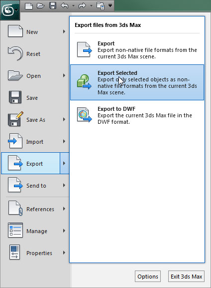
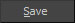
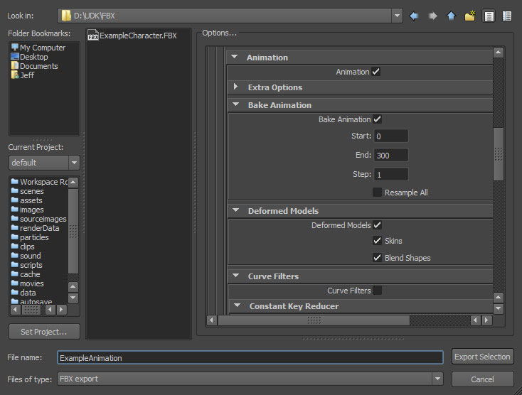
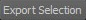
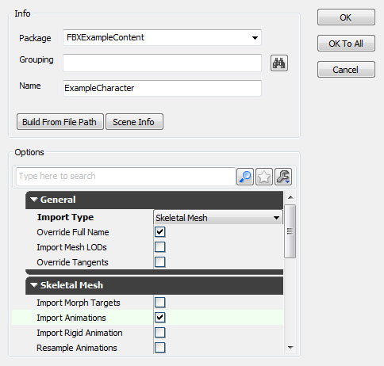
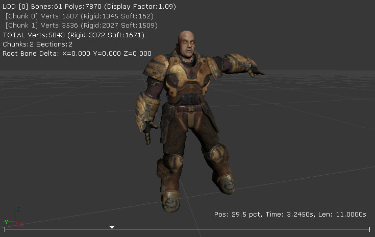
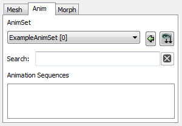
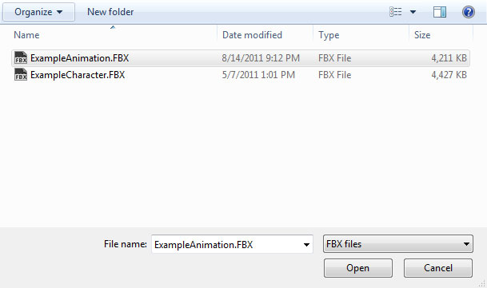
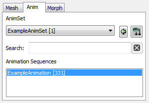
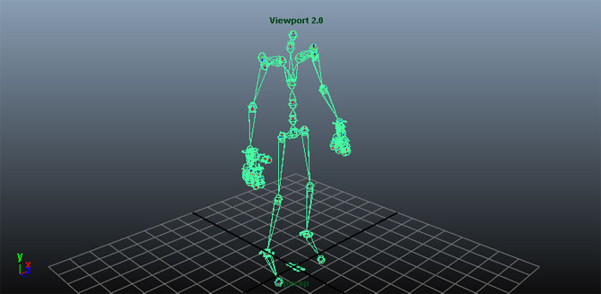

UDN
Search public documentation:
FBXAnimationPipelineKR
English Translation
日本語訳
中国翻译
Interested in the Unreal Engine?
Visit the Unreal Technology site.
Looking for jobs and company info?
Check out the Epic games site.
Questions about support via UDN?
Contact the UDN Staff
日本語訳
中国翻译
Interested in the Unreal Engine?
Visit the Unreal Technology site.
Looking for jobs and company info?
Check out the Epic games site.
Questions about support via UDN?
Contact the UDN Staff
UE3 홈 > FBX 콘텐츠 파이프라인 > FBX 애니메이션 파이프라인
UE3 홈 > 애니메이션 > FBX 애니메이션 파이프라인
UE3 홈 > 애니메이터 > FBX 애니메이션 파이프라인
UE3 홈 > 애니메이션 > FBX 애니메이션 파이프라인
UE3 홈 > 애니메이터 > FBX 애니메이션 파이프라인
FBX 애니메이션 파이프라인
문서 변경내역: Jeff Wilson 작성. 홍성진 번역.
개요
이름짓기
애니메이션 만들기
3D 앱에서 애니메이션 익스포트하기
- 뷰포트에서 익스포트하려는 애니메이션에 해당하는 본을 선택합니다.

- File 메뉴에서 Export Selected (나 선택한 것에 관계 없이 모든 것을 익스포트하려면 Export All ) 을 선택합니다.

- 애니메이션을 익스포트하려는 FBX 파일 위치와 이름을 선택한 다음

버튼을 누릅니다.

- FBX Export 대화창 옵션을 적절히 설정합니다. 애니메이션 익스포트를 위해서는 Animations 박스를 체크해야 합니다.

-
 버튼을 클릭하여 메시가 들어있는 FBX 파일을 만듭니다.
버튼을 클릭하여 메시가 들어있는 FBX 파일을 만듭니다.
- 뷰포트에서 익스포트하려는 조인트를 선택합니다.

- File 메뉴에서 Export Selection (이나 선택한 것에 관계 없이 모든 것을 익스포트하려면 Export All ) 을 선택합니다.

- 애니메이션을 익스포트하려는 FBX 파일 위치와 이름을 선택하고 FBX Export 대화창 옵션을 적절히 설정해 줍니다. 애니메이션 익스포트를 위해서는 Animation 박스를 체크해야 합니다.

-

버튼을 눌러 메시가 들어있는 FBX 파일을 만듭니다.
애니메이션 임포트하기
- 콘텐츠 브라우저에서
 버튼을 클릭합니다. 열리는 파일 브라우저에서 임포트하려는 FBX 파일 위치로 이동하여 선택합니다. 주:
버튼을 클릭합니다. 열리는 파일 브라우저에서 임포트하려는 FBX 파일 위치로 이동하여 선택합니다. 주:  드롭다운으로 필터를 적용할 수도 있습니다.
드롭다운으로 필터를 적용할 수도 있습니다.

- Import 대화창 설정을 적절히 선택합니다. Import Animations 가 켜졌는지 확인합니다. 주: 임포트한 메시 이름은 디폴트 작명 규칙 을 따릅니다. 모든 세팅 관련 자세한 내용은 FBX Import 대화창 부분을 확인하시기 바랍니다.

-
 버튼을 눌러 메시와 LOD 를 임포트합니다. 과정이 잘 진행됐으면 콘텐츠 브라우저에 결과 메시, 애니메이션 (애님세트), 머티리얼, 텍스처 등이 표시됩니다. 애니메이션을 담기 위해 생성된 애님세트 이름이 디폴트로 스켈레톤의 루트 본 이름을 따서 지어졌음을 볼 수 있습니다.
버튼을 눌러 메시와 LOD 를 임포트합니다. 과정이 잘 진행됐으면 콘텐츠 브라우저에 결과 메시, 애니메이션 (애님세트), 머티리얼, 텍스처 등이 표시됩니다. 애니메이션을 담기 위해 생성된 애님세트 이름이 디폴트로 스켈레톤의 루트 본 이름을 따서 지어졌음을 볼 수 있습니다.

애님세트 에디터에서 임포트한 메시를 확인하고 Anim 탭에서 새로이 생성된 애님세트를 선택해 보면, 임포트한 애니메이션 시퀸스를 재생하여 예상대로 작동하는지 확인할 수 있습니다.

- 애니메이션을 임포트해 넣으려는 애님세트를 콘텐츠 브라우저에서 더블클릭, 또는 연결된 애님세트가 연결된 스켈레탈 메시를 더블클릭하고 애님세트 에디터의 애님 탭에서 애님세트를 선택합니다.

- 애님세트 에디터의 파일 메뉴에서 FBX 애니메이션 임포트 를 선택합니다.

- 파일 브라우저에서 애니메이션을 담고 있는 FBX 파일 위치로 이동하여 선택합니다. 주: 파일을 확인하려면 포맷을
 으로 설정해야 할 수 있습니다.
으로 설정해야 할 수 있습니다.

- 애니메이션이 임포트 도중 진행상황 대화창이 표시됩니다. 완료되면 (디폴트로 FBX 파일 이름을 딴) 새 애니메이션 시퀸스가 애님 탭의 애니메이션 시퀸스 목록에 표시됩니다.

이제 임포트한 애니메이션 시퀸스를 재생하여 예상대로 돌아가는지 확인해 볼 수 있습니다.
언리얼 에디터에서 FBX 로 애니메이션 익스포트
- 콘텐츠 브라우저에서 익스포트하려는 애니메이션 시퀸스가 들어있는 AnimSet 애셋을 더블클릭(하거나 우클릭후 애님세트 에디터를 사용하여 편집 을 선택)하여 애님세트 에디터에서 엽니다.
- 애님 탭에서, 익스포트하려는 애니메이션 시퀸스를 선택합니다.

- 파일 메뉴에서 FBX 애니메이션 익스포트 를 선택합니다.

- 뜨는 파일창에서 익스포트할 파일 위치와 이름을 선택합니다.

애니메이션 시퀸스와 함께 현재 스켈레탈 메시를 익스포트할 수 있는 대화창이 뜹니다.

스켈레탈 메시를 익스포트하려면 예 를, 애니메이션 시퀸스만 익스포트하려면 아뇨 를 선택하십시오.
자료
- ExampleSkeleton.fbx (우클릭 > 다른 이름으로 저장)
